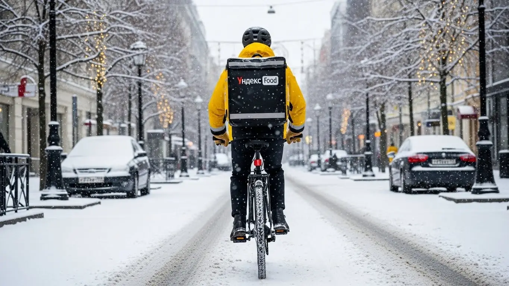
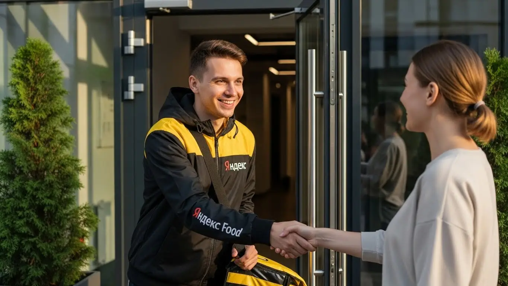
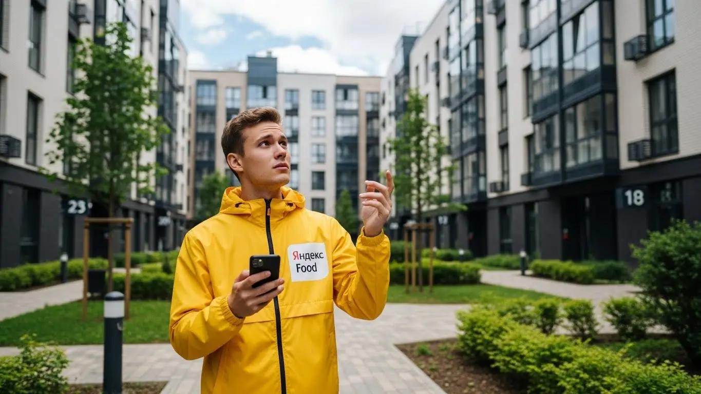
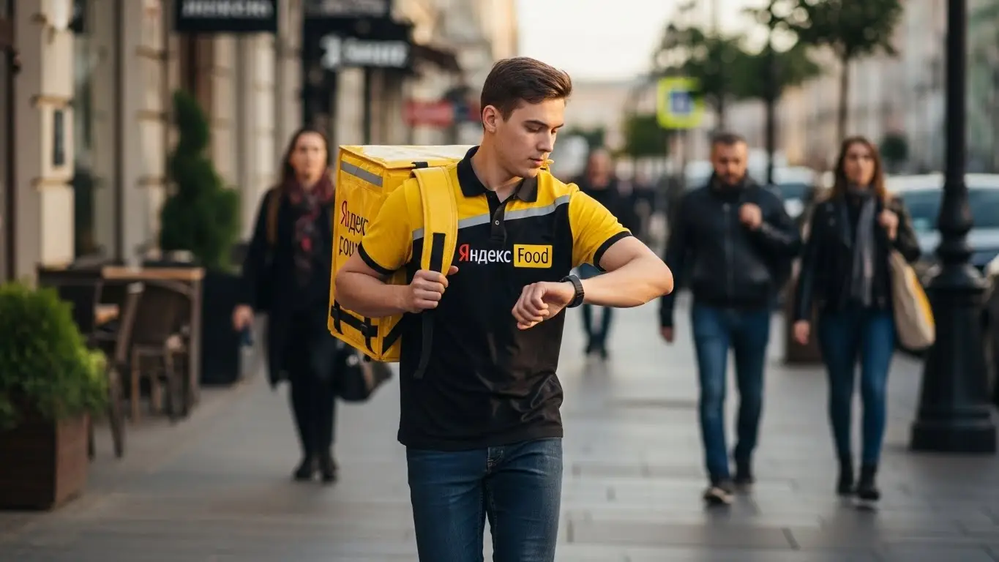
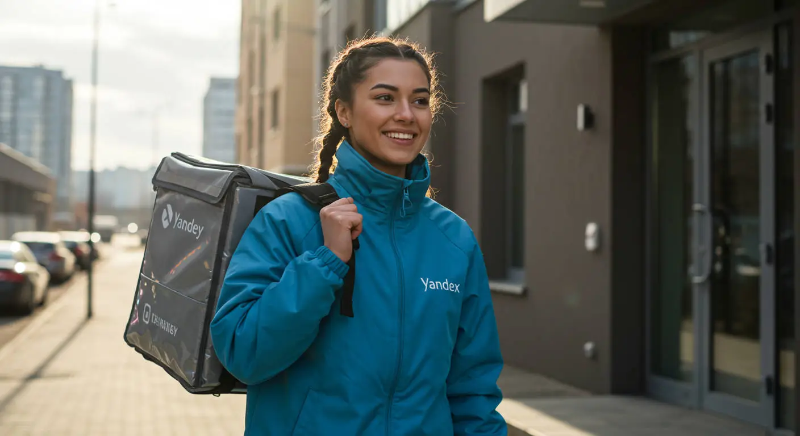

Доход и условия работы курьером Яндекс Еда в Новочеркасске 2025-2026
- Работа курьером Яндекс Еды в Новочеркасске: для кого эта вакансия и что вы получите
- Сколько вы будете зарабатывать курьером в Новочеркасске: калькулятор дохода и разбор выплат
- Реальный заработок курьера в Новочеркасске: смены и месячный доход
- График работы и форматы занятости
- Требования к кандидату и документы
- Самозанятость, налоги и юридическая чистота
- Пошаговое оформление и первый выход на линию в Новочеркасске
- Пешком, на вело или на авто: что выгоднее в Новочеркасске
- Районы, маршруты и «топовые» зоны заказов в Новочеркасске
- Безопасность, страховка, штрафы и оплата простоя
- Плюсы и возможные минусы работы курьером в Новочеркасске
- Реальные истории и отзывы курьеров из Новочеркасска
- Ответы на главные вопросы о работе курьером Яндекс Еды в Новочеркасске
- Короткие ответы на главные вопросы
- Итоги и ваш следующий шаг
Все города
Думаешь, что работа курьером Яндекс Еда в Новочеркасске — это легкие деньги на свободном графике? Я тоже так думал, пока не столкнулся с реальностью: вечными пробками на Баклановском проспекте, пустыми сменами в спальниках и страхом «убить» машину или велосипед на наших дорогах. В рекламных буклетах тебе обещают золотые горы, но никто не говорит, сколько из этих гор съедят бензин, налоги и штрафы. Этот гид — не реклама, а честный разговор о том, как на самом деле устроена эта работа в нашем городе.
Поверь, без понимания местной специфики ты рискуешь разочароваться в первый же месяц. Новочеркасск — город со своим характером. Здесь важно знать, где и когда есть спрос, как не застрять в центре в базарный день и почему заказы с Соцгорода не всегда самые выгодные. Большинство новичков совершают одни и те же ошибки: катаются впустую, берут невыгодные заказы и не понимают, почему в конце дня в кармане оказывается совсем не та сумма, которую показывало приложение.
В этом гиде мы честно разберём всё до мелочей. Выясним, что выгоднее в Новочеркасске — крутить педали, ходить пешком или жечь бензин на авто. Посчитаем, сколько реально остаётся чистыми после всех расходов. Я покажу на карте «рыбные» места и часы пик, расскажу, как погода влияет на доход и как не нарваться на штрафы, которые съедят всю твою дневную выручку. Мы разложим по полочкам всю «кухню» работы в Яндекс Еде именно в наших, новочеркасских, реалиях. Если вы хотите сразу увидеть ключевые условия, воспользоваться калькулятором дохода и подать заявку, то вся актуальная информация по работе курьером Яндекс Еда в Новочеркасске собрана на официальной странице.
Меня зовут Алексей. Я сам начинал курьером, а сейчас у меня небольшой таксопарк-партнёр. Я не теоретик из офиса, а человек, который откатал сотни смен по Новочеркасску и знает каждый его закоулок. Здесь не будет рекламной шелухи про «доход до 100 тысяч в неделю». Только факты, реальный опыт и советы, которые помогут тебе зарабатывать, а не просто тратить время и силы. В общем, давай по порядку, сейчас всё разложу.
Чтобы тебе было проще сориентироваться, вот короткий навигатор по ключевым темам статьи.
Что ты точно узнаешь из этого разбора
В этой статье ты ТОЧНО узнаешь:
- Сколько реально можно заработать в Новочеркасске за смену пешком, на велосипеде и на авто?
- Какие районы и «топовые» зоны в Новочеркасске приносят больше всего заказов и денег?
- Что выгоднее для Новочеркасска с его пробками и холмами — ходить пешком, крутить педали или жечь бензин?
- За что на самом деле могут «оштрафовать» или заблокировать и как этого избежать?
- Насколько сложно оформить самозанятость и как платить налоги, чтобы не было проблем?
- Как правильно выбирать слоты и ловить «фиолетовые зоны» с повышенной оплатой, чтобы не кататься впустую?
А если тебе некогда читать всю статью — переходи сразу к заключению, где ты найдёшь короткие ответы на все эти вопросы и указания, в каких разделах искать подробности.
А вот наглядная инфографика, чтобы сразу прикинуть ключевые цифры по работе в нашем городе.
Работа курьером в Новочеркасске: ключевые цифры
Доход в час
350–550 ₽
В пиковые часы с бонусами и чаевыми
Заработок за смену
2500–3800 ₽
Средний доход за 8-10 часов на линии
График работы
Свободный
Слоты от 2 часов, можно совмещать с учебой/работой
Особенности города
Компактный
Высокий спрос в центре, но есть районы с холмами
Работа курьером Яндекс Еды в Новочеркасске: для кого эта вакансия и что вы получите
Эта работа — не для всех, но для многих она станет отличным решением. Я видел самых разных людей, которые приходили в доставку Яндекс Еды или Яндекс Доставки и находили здесь то, что искали: деньги, свободный график или просто возможность не сидеть на месте. Давай разберёмся, кому в Новочеркасске эта вакансия подойдёт как влитая.
Кому подойдёт эта работа в Новочеркасске
По моему опыту, в доставке успешно работают несколько типов людей. Во-первых, это студенты, особенно из наших вузов вроде ЮРГПУ (НПИ), для которых это идеальная подработка. Можно выходить на пару часов после пар, кататься по центру и зарабатывать на свои нужды, не забивая на учёбу. Во-вторых, это люди, которым нужен дополнительный доход — мамы в декрете или те, у кого основной график два через два.
В-третьих, это те, кто ищет работу без опыта. Условия здесь простые: не нужно проходить долгие собеседования и доказывать, что ты что-то умеешь. Нужен смартфон, желание двигаться и аккуратность — остальному научат за пару часов. И, конечно, это водители-курьеры, которые хотят, чтобы их автомобиль приносил доход. Вместо того чтобы просто таксовать, можно возить заказы — это часто спокойнее и предсказуемее. Главное, что объединяет всех этих людей — потребность в гибком графике и быстрых деньгах.

Главные преимущества для жителей районов Соцгород, Молодёжный, Октябрьский
Одно из главных удобств работы курьером в Новочеркасске — возможность выполнять заказы прямо у себя в районе. Не нужно каждое утро тащиться через весь город, например, с Октябрьского в центр, чтобы начать смену. Можно просто выйти из дома, включить приложение «Яндекс Про» и начать брать заказы в своей зоне.
Живёшь в Молодёжном? Отлично, там много многоэтажек, а значит, и заказов из ближайших магазинов и пиццерий. Обитаешь на Соцгороде? Тоже хороший вариант, рядом промышленные зоны и жилые кварталы, где всегда есть спрос. Это экономит твоё время, деньги на проезд и нервы. Ты работаешь на знакомых улицах, знаешь все короткие пути и где лучше срезать — это огромное преимущество, которое многие недооценивают.
Краткое обещание по доходу и условиям
Давай по-честному, без заоблачных обещаний. В Новочеркасске зарплата курьера на полной занятости может стабильно составлять 50 000 – 80 000 рублей в месяц. Если нужна подработка на несколько часов в день, то можно рассчитывать на 1500–2500 рублей за смену. Этот доход реален, но зависит от тебя: как будешь работать, какой транспорт использовать и какие смены брать.
Главное, что ты получаешь — это свобода и контроль над своими деньгами. Ежедневные выплаты приходят на карту, не нужно ждать аванса и зарплаты. Ты сам решаешь, когда работать, а когда отдыхать. Никто не стоит над душой с планами и отчётами. Начать можно буквально завтра, даже если у тебя никогда не было подобного опыта.
Как-то раз ко мне пришёл парень, студент-первокурсник из НПИ, живёт в общаге в центре. Говорит, стипендии не хватает, а у родителей просить стыдно. Он решил стать пешим курьером. Выходил на 3-4 часа по вечерам, брал заказы в районе проспекта Платовского и улицы Московской. За первый месяц, работая по 15-20 часов в неделю, он сделал себе около 25 тысяч. Для него это были отличные деньги, которые он заработал сам, не пропустив ни одной лекции.
В общем, эта работа в Яндекс Еде для тех, кто ценит гибкость и хочет видеть результат своего труда сразу. Основные плюсы — свободный график, ежедневные выплаты и возможность работать рядом с домом без опыта. Мой совет: если сомневаешься, попробуй начать со своего района в свободное время, чтобы понять, подходит ли тебе такой формат.
Сколько вы будете зарабатывать курьером в Новочеркасске: калькулятор дохода и разбор выплат
Самый частый вопрос, который волнует новичков, — это деньги. «Сколько я буду зарабатывать?» — спрашивает каждый второй кандидат. И здесь нет простого ответа вроде «200 рублей в час», потому что твоя зарплата в Яндекс Еде — это не фиксированная ставка, а конструктор, который ты собираешь сам. Давай разберём его на детали, чтобы ты понимал, откуда берутся цифры и как на них влиять.
Из чего складывается доход курьера
Твой итоговый заработок за смену складывается из нескольких частей. Понимание этой механики — ключ к хорошему доходу.
- Оплата за заказ. Это базовая сумма за то, что ты взял заказ в ресторане или магазине и отнёс его клиенту.
- Доплата за расстояние. Чем дальше нести или везти заказ, тем больше доплатят. Система считает оптимальный маршрут, и каждый километр этого пути оплачивается.
- Повышающие коэффициенты. В часы пик (обед, ужин), в плохую погоду (дождь, мороз) или в зонах с высоким спросом на карте в «Яндекс Про» появляются «фиолетовые зоны». Заказы из этих зон стоят дороже. Ловить такие заказы — основной способ увеличить заработок.
- Бонусы. Сервис часто предлагает персональные цели. Например, выполни 15 заказов за день и получи бонус 500 рублей. Это отличная мотивация.
- Чаевые. Их оставляют клиенты, и эта сумма полностью твоя, сервис не берёт с неё комиссию. Вежливость, аккуратность и наличие чистой термосумки напрямую влияют на этот пункт.
- Оплата простоя. Важная вещь. Если ты на плановом слоте, а заказов нет, сервис всё равно начисляет минимальную оплату за время ожидания. Ты защищён от ситуаций, когда в районе временное затишье.
- Компенсация проезда. Для некоторых дальних заказов, особенно если ты пеший курьер, может быть предложена компенсация проезда на общественном транспорте.
Как пользоваться калькулятором дохода
Чтобы не гадать на кофейной гуще, на сайте есть специальный калькулятор. Это простой инструмент для примерного расчёта твоего будущего дохода. Пользоваться им элементарно: сначала выбираешь свой город — Новочеркасск. Затем указываешь, как планируешь доставлять: пешком, на велосипеде или на своём авто.
После этого двигаешь ползунки: сколько часов в день и сколько дней в неделю ты готов работать. Калькулятор на основе средних данных по городу покажет тебе примерный диапазон заработка за день и за месяц. Понятно, что это прогноз, а не гарантия, но он даёт хорошее представление о том, на какие цифры можно ориентироваться. Поэкспериментируй с ним, посмотри, как меняется доход, если работать на пару часов больше или взять дополнительный выходной.
Калькулятор дохода курьера в Новочеркасске
8 часов
5 дней
Примерный доход в месяц:
67 200 ₽
Это примерно 3 360 ₽ в день
* Расчёт основан на средней ставке 420 ₽/час для Новочеркасска. Реальный доход зависит от спроса, бонусов, чаевых и типа доставки.
Чтобы прикинуть цифры точнее и узнать актуальные условия, загляни на официальную страницу — там же можно оставить заявку: работа курьером Яндекс Еда в твоём городе.
Примеры расчёта для пешего, вело- и авто‑курьера в Новочеркасске
Давай рассмотрим три реальных сценария для нашего города, чтобы было понятнее.
- Пеший курьер. Студент, который ищет подработку на 4 часа вечером в будни в центре. Зона — проспект Платовский, улицы Московская, Пушкинская. Здесь много кафе и плотная застройка, заказы короткие. В среднем он выполняет 2-3 заказа в час. За смену выходит около 1200–1600 рублей. В месяц набегает 25 000–30 000 рублей — отличная прибавка к стипендии.
- Велокурьер. Работает по 8 часов в выходные, катается между спальными районами — Соцгород и Молодёжный. На велосипеде он быстрее пешего, может брать заказы на большее расстояние. За день делает 20–25 заказов. Его доход за смену — 2500–3500 рублей. За месяц, работая только по выходным, можно заработать 20 000–28 000 рублей.
- Водитель-курьер на своем авто. Работает почти полную неделю по 8–10 часов. На машине он закрывает весь город, включая дальние заказы в район Хотунка или на выезды из города. Он берёт крупные заказы из гипермаркетов, работает в любую погоду, ловя высокие коэффициенты. Его дневной заработок может достигать 4000–5500 рублей. В месяц это выливается в 70 000–90 000 рублей «грязными», из которых нужно вычесть расходы на бензин.
Сравнение типов доставки в Новочеркасске
| Параметр | Пеший курьер | Велокурьер | Авто-курьер |
|---|---|---|---|
| Средний доход за смену (8ч) | 2000 – 3000 ₽ | 2500 – 3800 ₽ | 3500 – 5500 ₽ |
| Лучшие районы | Центр (просп. Платовский) | Соцгород, Молодёжный | Весь город, включая Хотунок и пригороды |
| Плюсы | Нет расходов, фитнес | Скорость, маневренность | Комфорт, большие заказы, работа в любую погоду |
| Минусы / Расходы | Усталость, медленная скорость | Нужен свой велосипед, зависимость от погоды | Расходы на бензин и обслуживание авто |
У меня есть знакомый водитель-курьер, Сергей. Он раньше в такси работал, устал от ночных смен и неадекватных пассажиров. Перешёл в доставку на своей старенькой «Гранте». Он выходит на линию к 11 утра, работает до 15:00, ловит обеденный пик через Яндекс Про. Потом делает перерыв и снова выходит с 18:00 до 22:00 на ужины. Особенно любит работать в дождь — говорит, коэффициенты взлетают, а конкурентов на улице меньше. За такой свободный график у него выходит в среднем по 4-5 тысяч в день.
В итоге, твой заработок — это не случайность, а результат твоих действий. Понимай, из чего он состоит, используй калькулятор для планирования и выбирай тот формат работы, который подходит именно тебе и твоему району. Большинство курьеров оформляют самозанятость — это просто и позволяет работать официально. Мой совет: не бойся экспериментировать — попробуй поработать и в центре, и в спальнике, в разное время, чтобы нащупать свою самую выгодную стратегию.

Реальный заработок курьера в Новочеркасске: смены и месячный доход
Теперь поговорим о конкретных цифрах. Сколько реально можно положить в карман, если устроиться курьером в сервисы Яндекса в Новочеркасске? Сумма зависит от трёх вещей: как ты работаешь (пеший, на велосипеде или на авто), сколько времени этому уделяешь (подработка или полная занятость) и насколько грамотно подходишь к делу. Не жди, что в первый же день на тебя посыпятся золотые горы, но при правильном подходе доход будет стабильным.
Нужно понимать: твой заработок — это не просто ставка в час. Он складывается из множества частей: оплата за подачу, за каждый километр пути, доплаты за высокий спрос (те самые «фиолетовые зоны» в приложении), бонусы и чаевые. Поэтому два курьера, отработавшие одинаковые 8 часов, могут получить совершенно разную сумму. Один сидел в «тихом» районе, а второй активно перемещался по зонам высокого спроса и ловил пиковые коэффициенты.
Из практики: был у меня парень, курьер на автомобиле, в первый месяц жаловался, что выходит мало, около 2500–3000 рублей за полный день. Стали разбираться. Оказалось, он катался в основном по своему спальному району Хотунок, где днём заказов немного. Я ему посоветовал смещаться к обеду в центр, к проспекту Платовскому, а вечером работать по крупным жилым массивам типа микрорайона Октябрьский. Через неделю его дневной доход вырос до 4000–4500 рублей «грязными», просто за счёт смены локации в правильное время.
Сравнение среднего дохода в Новочеркасске по типам занятости
| Тип занятости | Пеший курьер | Велокурьер | Автокурьер (до вычета топлива) |
|---|---|---|---|
| Подработка (2–4 часа/день) | 600 – 1200 ₽/смена | 800 – 1600 ₽/смена | 1200 – 2200 ₽/смена |
| Полная занятость (8–10 часов/день) | 1800 – 2800 ₽/смена | 2500 – 3800 ₽/смена | 3500 – 5500 ₽/смена |
| Примерный доход в месяц (полная занятость, 22 смены) | 40 000 – 60 000 ₽ | 55 000 – 80 000 ₽ | 75 000 – 110 000 ₽ |
В итоге, твой реальный заработок напрямую зависит от стратегии. Можно просто включать приложение и ждать, а можно анализировать спрос, погоду и время, чтобы быть в нужном месте в нужное время. Мой совет: в первую неделю не гонись за рекордами, а изучи город с точки зрения заказов — пойми, где и когда «горит» спрос.
Диапазон дохода для подработки и полной занятости
Если ты ищешь подработку на несколько часов в день, например, после учёбы в ЮРГПУ (НПИ) или основной работы, то цифры будут одни. Если же готов работать полный день — совсем другие. В Новочеркасске, как и везде, чем больше ты на линии в «правильные» часы, тем выше итоговая сумма.
Как видно из таблицы выше, формат подработки (2–4 часа в день, обычно в вечерний пик) приносит пешему курьеру 600–1200 рублей за смену, а курьеру на велосипеде — 800–1600 рублей. Водитель на авто за то же время может получить 1200–2200 рублей, но из этой суммы нужно вычесть расходы на бензин. В месяц такая занятость даёт от 15 до 35 тысяч рублей дополнительного дохода.
При полной занятости (8–10 часов) заработок серьёзнее. Пеший курьер в среднем получает 1800–2800 рублей в день, а велокурьер — до 3800 рублей. Курьер на автомобиле при полной загрузке и работе в зонах с высоким коэффициентом может заработать 3500–5500 рублей за смену. Таким образом, месячный доход при графике 5/2 может достигать 40–60 тысяч у пеших, 55–80 тысяч у вело- и до 110 тысяч у автокурьеров до вычета расходов.

Как район, время суток и погода влияют на доход
Запомни три кита высокого заработка: место, время и погода. Если ты научишься их чувствовать, будешь всегда с заказами. В Новочеркасске есть свои «хлебные» места и часы. Центр города, особенно проспект Платовский и прилегающие улицы, — это зона высокого спроса в обеденное время (с 12:00 до 15:00) и по вечерам. Здесь много кафе и ресторанов, откуда идут заказы Яндекс Еды. Спальные районы, такие как Октябрьский, Соцгород или Молодёжный, «просыпаются» вечером (с 18:00 до 22:00) и в выходные, когда люди заказывают еду и продукты на дом.
Время суток — ключевой фактор. Утром заказов мало, в основном это доставка документов или небольших посылок. Настоящая работа начинается в обед и достигает пика вечером. Пятница, суббота и воскресенье — самые прибыльные дни, потому что люди отдыхают и активно пользуются доставкой. В эти дни сервис часто вводит дополнительные бонусы и повышает коэффициенты, чтобы мотивировать курьеров выходить на линию.
Погода — твой лучший друг, как бы странно это ни звучало. Как только начинается дождь, сильный ветер, снегопад или, наоборот, аномальная жара, количество заказов взлетает. Люди не хотят выходить из дома, а курьерам за работу в сложных условиях полагаются повышенные коэффициенты. Кроме того, в плохую погоду клиенты чаще оставляют хорошие чаевые — из благодарности за то, что ты доставил их заказ, пока они сидели в тепле и уюте.
Советы по увеличению заработка от опытных курьеров
Чтобы зарабатывать больше, не обязательно работать дольше. Нужно работать умнее. Вот несколько проверенных советов от опытных сотрудников. Во-первых, всегда следи за картой спроса в приложении «Яндекс Про». Видишь «фиолетовую» или «красную» зону — двигайся туда, там доплаты к каждому заказу. Не сиди на месте в ожидании заказа, если твой район «зелёный».
Во-вторых, грамотно выбирай слоты. Самые выгодные — вечерние (с 18:00 до 22:00) и слоты выходного дня. Если есть возможность, бронируй их заранее, так как они быстро разбираются. Плановые слоты часто идут с гарантией минимального дохода: даже если заказов будет мало, сервис доплатит тебе до определённой суммы.
В-третьих, сочетай разные подходы. Если ты в центре, где плотная застройка и короткие расстояния, пеший формат может быть эффективнее, чем авто, которое застрянет в пробках на Московской улице. Велосипед идеален для быстрых перемещений между соседними районами, например, из центра в Октябрьский. Автомобиль же незаменим для доставки в отдалённые части города, пригород или для выполнения крупных заказов из гипермаркетов в плохую погоду, для которых понадобится термокороб. Не бойся экспериментировать, чтобы найти свою золотую середину.
График работы и форматы занятости
Одно из главных преимуществ этой работы — свободный график. Ты сам решаешь, когда и сколько работать. Хочешь — выходи на пару часов вечером, хочешь — работай полную неделю. Никто не стоит над душой с графиком отпусков и требованиями отработать с 9 до 6. Это идеальный вариант для тех, кто ценит свободу и хочет сам управлять своим временем и доходом.
Такой свободный график позволяет легко совмещать доставку с учёбой, основной работой или личными делами. Приложение «Яндекс Про» — это твой личный кабинет, где ты видишь доступные смены (слоты), выбираешь удобное время и район. Можешь запланировать работу на неделю вперёд или выйти на линию спонтанно, если появилось свободное время и есть спрос.
Из практики: у меня работает водителем-курьером мужчина лет 50, у него основная работа — сменный график на заводе. В свои выходные он берёт 8–10-часовые смены в Яндекс Доставке. Говорит, что за 8–10 таких смен в месяц спокойно привозит домой дополнительные 30–40 тысяч рублей. Это позволяет ему и кредит за машину гасить, и семье помогать, не надрываясь на второй полноценной работе.
В итоге, свободный график — это не просто рекламный слоган, а реальный инструмент. Он позволяет как студентам заработать на карманные расходы, так и взрослым людям найти серьёзную подработку или даже основной источник дохода. Главное — самодисциплина: чем ответственнее ты подходишь к планированию своих выходов, тем стабильнее твой заработок.
Подработка после учёбы или основной работы
Совмещать работу курьером с другими делами в Новочеркасске более чем реально. Вот пара живых примеров, как это работает на практике.
Пример первый: студент НИМИ. Живёт в общежитии, учится в первую смену. Он выходит на линию на велосипеде примерно в 17:00 и работает до 21:00–22:00, пока есть спрос. В основном доставляет заказы Яндекс Еды по центру и ближайшим микрорайонам. За 4–5 часов вечера у него выходит в среднем 1200–1500 рублей. В субботу он берёт слот на 6–8 часов. В итоге за месяц набегает 20–25 тысяч рублей — отличные деньги, чтобы не просить у родителей и чувствовать себя самостоятельным.
Пример второй: девушка, работает администратором в салоне красоты по графику 2/2. В свои выходные она выходит на линию на своей машине. Работает неполный день, часов по 6–7, предпочитая дневное и вечернее время. Она не гонится за максимальным количеством заказов, работает в комфортном темпе. За 2 выходных дня у неё получается заработать 5000–7000 рублей «грязными». За месяц это даёт ей прибавку к зарплате в 20–28 тысяч, которые она откладывает на отпуск.

Полная занятость: как выглядит типичный день курьера
Если ты рассматриваешь эту работу как основную, твой день будет строиться вокруг пиков спроса. Допустим, ты велокурьер и работаешь полный день. Твой график может выглядеть так: выход на линию около 11:00 с термосумкой за плечами. Ты начинаешь в районе с большим количеством кафе, например, в центре. До 12:00 заказов немного, это время для раскачки.
С 12:00 до 15:00 — обеденный пик. Заказы идут один за другим, практически без пауз. Главное — быстро доставлять и сразу брать следующий. После 15:00 наступает спад, который длится до 17:00–18:00. Это идеальное время для полноценного обеда и отдыха. Можно переехать в крупный спальный район, например, Соцгород, чтобы быть готовым к вечернему наплыву.
С 18:00 до 21:00 — второй, самый мощный пик. Заказы из ресторанов, кафе, магазинов. Коэффициенты в это время максимальные. Работаешь в интенсивном режиме. После 21:00 спрос постепенно снижается. Можно выполнить ещё пару заказов и к 22:00 завершать смену. В конце дня смотришь в приложении итоговую сумму и выводишь деньги на карту — для самозанятых курьеров доступны ежедневные выплаты.
Как планировать слоты и выходы через приложение «Яндекс Про»
Вся работа курьером в Яндексе организуется через приложение «Яндекс Про». Там есть раздел «Расписание», где ты видишь доступные для бронирования смены — плановые слоты. Это отрезки времени (например, с 10:00 до 16:00 или с 18:00 до 23:00) в определённых районах города. Выбирая такой слот, ты обязуешься быть на линии в указанное время и в указанной зоне. Плюс плановых слотов — часто на них действует гарантия минимального дохода.
Чтобы забронировать слот, нужно просто зайти в расписание, выбрать подходящий день, время и район, и нажать «Записаться». Популярные слоты (вечера пятницы, выходные) лучше бронировать заранее, за несколько дней. Перед началом смены приложение пришлёт напоминание. Очень важно приехать в выбранную зону и нажать кнопку «На линии» вовремя. Опоздания негативно влияют на твой рейтинг Активности, а из-за этого тебе могут предлагать меньше заказов.
Кроме плановых слотов, есть возможность выходить на линию в свободном режиме. Ты просто приезжаешь в любую зону, где есть спрос, и начинаешь работать. Это даёт больше гибкости, но без гарантий минимального дохода. Новичкам я советую начинать именно с плановых слотов: это дисциплинирует и помогает быстрее понять, как устроен процесс и где больше всего заказов.
Требования к кандидату и документы
Многих новичков пугает именно этот этап — кажется, что сейчас потребуют кипу бумаг, справки и дипломы. На деле всё гораздо проще. Требования у Яндекса базовые, и собрать нужные документы можно за один вечер, не выходя из дома. Главное — твоё желание работать и зарабатывать, а не бюрократия.
Возраст, гражданство и базовые условия
Начнём с основ. Главное условие, чтобы стать курьером Яндекс Еды, — тебе должно быть полных 18 лет. Это строгое правило, связанное с материальной ответственностью и законодательством. По гражданству требования тоже чёткие: принимают граждан Российской Федерации, а также стран ЕАЭС (Беларусь, Казахстан, Армения, Киргизия) при наличии всех необходимых документов для легальной работы.
Каких-то особых требований к физической форме нет. Понятно, что пешему курьеру придётся много ходить, а велокурьеру — крутить педали, так что выносливость не помешает. Но никто не ждёт от тебя олимпийских рекордов. Если можешь без проблем подняться на пятый этаж и нести пару пакетов с продуктами, ты справишься. И самое важное — нужен смартфон на базе Android, потому что именно на нём работает приложение для курьеров «Яндекс Про».
Какие документы нужны для работы курьером
Список документов для работы курьером минимальный, и скорее всего, всё это у тебя уже есть под рукой. Никаких сложных справок собирать не придётся.
Вот что тебе понадобится, чтобы устроиться в сервис:
- Паспорт. Основной документ для подтверждения личности и возраста. Нужен будет скан или чёткое фото главной страницы и прописки.
- ИНН (Идентификационный номер налогоплательщика). Он нужен для оформления самозанятости и уплаты налогов. Если не помнишь свой номер, его легко узнать за пару минут на сайте ФНС или Госуслуг.
- Реквизиты банковской карты. Нужна карта любого российского банка, оформленная на твоё имя. На неё будут приходить выплаты. Подойдёт и дебетовая, и кредитная, главное — чтобы ты мог получать на неё деньги.
- Медицинская книжка. Она требуется не всегда. Медкнижка понадобится, если ты планируешь доставлять заказы из некоторых ресторанов или дарксторов (складов), где есть строгие санитарные нормы. Если её нет, не страшно — можно начать работать с заказами, где она не нужна, и оформить её позже.
Советую заранее сделать чёткие фотографии этих документов на телефон. Когда будешь заполнять анкету, сможешь быстро их загрузить и не тратить время на поиски.
Можно ли работать с 16 лет и какие есть альтернативы
Частый вопрос от молодых ребят, со скольки лет можно работать в Яндекс Еде: берут ли с 16 или 17 лет? Отвечаю честно: нет, не берут. Минимальный возраст для регистрации в сервисе — 18 лет. Это связано с полной дееспособностью, возможностью оформить самозанятость и нести ответственность за доставляемые заказы и денежные средства. Сервис работает строго в рамках закона, поэтому исключений здесь не бывает.
Если тебе ещё нет 18, а заработать хочется, не стоит отчаиваться. Можно рассмотреть другие варианты подработки, которые доступны подросткам в Новочеркасске. Например, раздача листовок, работа промоутером на акциях в торговых центрах или помощь по хозяйству соседям. Это, конечно, не так технологично и гибко, как работа курьером, но поможет получить первый опыт и заработать карманные деньги. А как только исполнится 18 — добро пожаловать в Яндекс Еду.
Был у меня в таксопарке парень, студент НПИ, которому только-только 18 стукнуло. Он очень переживал, что с документами будет волокита. Говорил: «Я в этих ИНН и налогах вообще не разбираюсь, вдруг что-то не так сделаю?». Я ему объяснил, что всё делается онлайн. Мы с ним сели, за 5 минут нашли его ИНН на сайте налоговой, он сфотографировал паспорт на телефон и тут же в приложении банка выпустил себе виртуальную карту для выплат. Весь процесс занял меньше получаса. На следующий день он уже вышел на свою первую смену в районе Октябрьского и заработал первые деньги.
В общем, требования к кандидату и документам — это не барьер, а простая формальность. Главное — быть совершеннолетним, иметь гражданство РФ или ЕАЭС и смартфон на Android. Подготовь паспорт и ИНН заранее, и процесс оформления пройдёт максимально быстро.
Самозанятость, налоги и юридическая чистота
Многих пугает оформление самозанятости и слово «налоги». Кажется, что это сложно, муторно и вообще «зачем платить, если можно не платить». Это устаревший подход. Работа вбелую как самозанятый — это, наоборот, твоя защита, спокойствие и простота. Яндекс сделал этот процесс настолько автоматизированным, что ты его почти не замечаешь.
Почему курьеры Яндекс Еды работают как самозанятые
Работа курьером в Яндекс Еде возможна только в статусе самозанятого. Официально это называется налог на профессиональный доход (НПД), и это самый простой и легальный способ сотрудничать с такой крупной компанией. Ты не наёмный сотрудник со строгим графиком, а независимый партнёр. Это даёт тебе свободу выбирать, когда и сколько работать.
Главные плюсы такого формата:
- Официальный доход. Все твои заработки — белые. Это значит, ты можешь, например, взять кредит в банке или получить визу, подтвердив свой доход справкой из приложения «Мой налог».
- Простота. Никакой бухгалтерии, отчётов и деклараций. Все операции проходят через приложение, чеки формируются автоматически.
- Легальность. Ты работаешь честно, платишь небольшой налог и спишь спокойно. Никаких рисков, связанных с «серой» зарплатой или работой за наличку.
По сути, самозанятость — это компромисс между полной свободой и официальной работой. Ты сам себе начальник, но при этом работаешь легально и прозрачно. Для Яндекса это тоже удобно: они сотрудничают с тысячами партнёров по всей стране, и такой формат упрощает все расчёты.
Как за 10 минут оформить самозанятость через «Мой налог»
Оформление самозанятости — это дело нескольких минут, и для этого даже не нужно выходить из дома. Всё делается через официальное приложение Федеральной налоговой службы «Мой налог».
Вот простая пошаговая инструкция, как стать самозанятым:
- Скачай приложение. Найди в Google Play приложение «Мой налог» и установи его на свой Android-смартфон.
- Выбери способ регистрации. Самый простой и быстрый — по паспорту. Приложение попросит тебя отсканировать главный разворот паспорта камерой телефона и сделать селфи для подтверждения личности. Также можно зарегистрироваться через личный кабинет налогоплательщика или учётную запись на Госуслугах.
- Подтверди данные. Проверь, что все данные распознались верно, и подтверди регистрацию.
- Готово! Через несколько минут тебе придёт уведомление, что ты зарегистрирован в качестве плательщика НПД. Весь процесс реально занимает не больше 10 минут.
После этого нужно будет просто привязать свой статус самозанятого в приложении «Яндекс Про». Сервис сам будет передавать данные о твоих доходах в налоговую, так что вручную ничего вбивать не придётся.
Сколько и как платить налоги
Теперь о самом главном — о деньгах. Налог для самозанятых курьеров — один из самых низких в стране. Ты платишь 6% с доходов, полученных от юридических лиц (то есть от Яндекса). Если получаешь чаевые от клиентов (физических лиц), то с них налог составляет 4%, но их можно и не проводить, это на твоё усмотрение.
Процесс уплаты налога максимально автоматизирован и не требует от тебя никаких усилий:
- Яндекс Еда после каждой выплаты автоматически отправляет информацию о твоём доходе в ФНС.
- Приложение «Мой налог» само рассчитывает сумму налога за прошедший месяц.
- До 12-го числа следующего месяца тебе приходит уведомление с итоговой суммой.
- Оплатить налог нужно до 28-го числа. Это можно сделать прямо в приложении, привязав банковскую карту. Нажал одну кнопку — и всё, долг перед государством выполнен.
Это гораздо проще и безопаснее, чем работать неофициально. Тебе не нужно прятаться, бояться проверок или проблем с банком из-за непонятных переводов на карту. Ты работаешь честно, а твой доход полностью легален.
У меня есть знакомый водитель, который долгое время работал «всерую» в разных местах, получал деньги на карту от непонятных лиц. В итоге его счёт заблокировали по 115-ФЗ до выяснения происхождения средств. Он потратил кучу нервов и времени, чтобы доказать, что не мошенник. Когда после этого он устроился работать с Яндексом как самозанятый, он сказал, что это как гора с плеч. Всё прозрачно: вот доход, вот налог, всё официально. Он спокойно взял кредит на ремонт в квартире, потому что смог предоставить банку справку о доходах прямо из приложения.
Самозанятость — это не проблема, а современный инструмент для легальной и спокойной работы курьером. Оформляется за 10 минут, налоги считаются автоматически, а ты получаешь официальный доход и все его преимущества. Мой совет: не бойся этого, а просто один раз разберись — и работай спокойно.
Пошаговое оформление и первый выход на линию в Новочеркасске
Многие думают, что устройство на работу курьером — это долгая история с бумажками и собеседованиями. На деле всё гораздо проще и быстрее. Весь процесс от анкеты до первого заработка занимает от нескольких часов до одного дня. Главное — не тупить и следовать простым шагам. Никаких начальников и душных офисов, всё делаешь сам через смартфон.
Шаг 1–2: анкета и онлайн‑обучение
Первым делом ты заходишь на сайт и заполняешь короткую анкету. Там нет вопросов про твой диплом или предыдущие места работы. Нужны базовые данные: ФИО, телефон, город — Новочеркасск. После этого система попросит загрузить фото документов, обычно это паспорт и ИНН. Не переживай, это стандартная проверка, чтобы убедиться, что ты — это ты, и с тобой можно официально сотрудничать.
Как только твои данные проверят (обычно это занимает от 15 минут до пары часов), тебе откроется доступ к короткому онлайн-обучению. Это несколько видеороликов и простые тесты, где тебя научат, как пользоваться приложением «Яндекс Про», как общаться с клиентами и ресторанами, что делать в нестандартных ситуациях. Обучение сделано для людей, а не для роботов, так что разберётся даже тот, кто с техникой на «вы». Прошёл тесты — и ты почти готов к работе.
Шаг 3: получение сумки и доступа к заказам в Новочеркасске
Следующий этап — экипировка. Главный твой инструмент — это фирменный термокороб. Без него работать нельзя, потому что еда должна доезжать до клиента горячей, а напитки — холодными. В Новочеркасске получить сумку можно несколькими способами, чаще всего через офисы партнёров Яндекса.
Точные адреса и время работы таких точек появятся у тебя в приложении «Яндекс Про» после того, как ты пройдёшь обучение. Просто выбираешь ближайший и удобный для себя пункт, приезжаешь и забираешь. Иногда сумку могут даже привезти на дом. Как только сумка у тебя на руках и ты активировал её в профиле, система даёт тебе полный доступ к заказам.
Шаг 4: первый слот и первый доход
Всё, ты в системе. Теперь открывай «Яндекс Про», смотри на карту Новочеркасска и выбирай свой первый слот. Слот — это запланированный отрезок времени, когда ты будешь на линии. Можешь выбрать 2, 4, 6 часов — сколько тебе удобно. Для начала советую выбрать район, который ты хорошо знаешь. Например, если живёшь в микрорайоне Октябрьском, начни с него. Так будет спокойнее.
Выбираешь слот, нажимаешь кнопку «На линии» — и ждёшь первый заказ. Обычно долго ждать не приходится, особенно в обеденное или вечернее время. Выполнил заказ — деньги сразу же появляются на твоём балансе в приложении. Их можно выводить на карту хоть каждый день. Так что свой первый доход ты получишь уже в первый же день работы.
Из практики: у меня парень один устраивался, так он утром заполнил анкету, пока пил кофе. К обеду прошёл обучение, съездил в офис партнёра за сумкой на проспекте Баклановском. А вечером уже вышел на пару часов в своём районе Соцгород. Сделал три заказа из кафешек, заработал первые 700 рублей. Говорит, был удивлён, что всё так быстро и без бюрократии.
В общем, процесс оформления максимально простой и рассчитан на то, чтобы ты начал зарабатывать как можно скорее. Главное — иметь под рукой паспорт, ИНН и смартфон на Android. Если всё это есть, то от идеи «а не пойти ли в курьеры» до реальных денег на карте — буквально один день.

Пешком, на вело или на авто: что выгоднее в Новочеркасске
Выбор транспорта — ключевой момент, от которого напрямую зависит твой заработок и комфорт. В Новочеркасске у каждого способа доставки есть свои плюсы и минусы. Город у нас неровный, с холмами, есть и плотный центр, и разбросанные спальные районы, поэтому подходить к выбору нужно с умом. Нельзя просто сказать, что машина всегда лучше велосипеда, — всё зависит от того, где и когда ты планируешь работать.
Пеший курьер: для центра и плотной застройки в Новочеркасске
Если у тебя нет ни машины, ни велосипеда, пеший формат — отличный старт. Он идеально подходит для работы в центре города. В районе проспекта Платовского, улиц Московской и Пушкинской сосредоточено огромное количество кафе, ресторанов и магазинов. Заказы здесь короткие, часто в пределах одного-двух кварталов. Машине тут тесно, с парковкой вечные проблемы, а пешком ты пройдёшь везде.
Пеший курьер не тратится на бензин и обслуживание транспорта. По сути, твои расходы — это удобная обувь и мобильный интернет. Да, ты не сможешь брать дальние заказы, но за счёт высокой плотности заказов в центре можно делать по 3-4 доставки в час и неплохо зарабатывать. К тому же, это отличная физическая нагрузка — считай, бесплатный фитнес.
Велокурьер: быстрые доставки между спальными районами
Велосипед в городских условиях — это золотая середина. Ты быстрее пешего курьера, но при этом не зависишь от пробок, как водитель. Велосипед идеален для работы в крупных спальных районах, таких как микрорайон Октябрьский или Соцгород. Расстояния там уже побольше, чем в центре, пешком не набегаешься, а для машины — слишком короткие и невыгодные поездки.
На велосипеде ты можешь быстро перемещаться между точками, срезать путь через дворы и парки. Да, в Новочеркасске есть подъёмы, например, спуск к роще «Красная весна» или подъём по улице Троицкой, но для человека в нормальной физической форме это не проблема. Велосипед — это скорость, манёвренность и экономия. Плюс, как я говорю, «оплачиваемый фитнес».
Водитель‑курьер: заказы по всему городу и пригороду станицы Кривянской
Работа курьером на своем авто — это твой главный козырь, если ты нацелен на максимальный доход. Водитель-курьер не привязан к одному району и может выполнять самые дорогие заказы. Это доставка в отдалённые части города, например, в микрорайон Молодёжный, или в пригород — в ту же станицу Кривянскую или посёлок Персиановский. Такие заказы оплачиваются значительно выше.
В плохую погоду — дождь, снег или сильный ветер — спрос на доставку на авто взлетает, а коэффициенты растут. Пока пешие и велокурьеры пережидают непогоду, ты спокойно работаешь в тепле и комфорте, собирая самые «жирные» заказы. Кроме того, на машине можно выполнять доставку из гипермаркетов, где заказы тяжёлые и объёмные. Да, есть расходы на бензин и амортизацию, но при грамотном подходе они с лихвой окупаются высоким доходом.
Сравнение форматов доставки в Новочеркасске
| Параметр | Пеший курьер | Велокурьер | Водитель-курьер |
|---|---|---|---|
| Потенциальный доход | Средний | Выше среднего | Высокий |
| Лучшие районы | Центр (пр. Платовский, ул. Московская) | Спальные районы (Октябрьский, Соцгород) | Весь город и пригороды (Молодёжный, ст. Кривянская) |
| Типы заказов | Короткие, из кафе и ресторанов | Средние дистанции, еда и небольшие посылки | Дальние, крупные, из гипермаркетов |
| Расходы | Минимальные (обувь, интернет) | Низкие (обслуживание велосипеда) | Высокие (бензин, амортизация, страховка) |
| Преимущества | Без вложений, фитнес, манёвренность в центре | Скорость, независимость от пробок, экономия | Комфорт, большие заказы, работа в любую погоду |
Мой совет: начинай с того, что у тебя есть. Если есть велосипед — отлично, это универсальный вариант для Новочеркасска. Если нет ничего — попробуй поработать пешком в центре в пиковые часы, чтобы понять механику. Но если ты хочешь сделать работу курьером основным источником дохода, то в условиях нашего города рано или поздно стоит задуматься об автомобиле. Он даёт максимальную свободу и доступ к самым выгодным заказам.
Районы, маршруты и «топовые» зоны заказов в Новочеркасске
Знание города — это твои деньги. Новочеркасск, конечно, не мегаполис, но и здесь есть свои «рыбные места» и «мёртвые зоны». Если бездумно кататься по всему городу, то половину заработка съест бензин или твои же силы. Поэтому первое, чему нужно научиться, — это читать карту спроса в приложении и понимать, где и когда концентрируются заказы.
В целом, логика простая: где люди отдыхают, работают и живут, там и заказывают. Центр города, крупные торговые центры и густонаселённые спальные районы — вот три кита, на которых держится стабильный доход курьера. Важно не просто приехать в такую зону, а понимать её ритм: днём больше заказов у офисов, вечером — в жилых кварталах, а в выходные «горят» зоны вокруг ТРЦ и парков.
Из практики: у меня был парень, автокурьер, который поначалу работал только в центре, вокруг проспекта Платовского. Зарабатывал средне. А потом я ему посоветовал попробовать взять вечерние слоты в микрорайоне Октябрьском. Он сначала сомневался, мол, что там ловить. А в итоге оказалось, что там плотность заказов еды из местных кафешек и пиццерий на квадратный километр вечером выше, чем в центре. За 4 часа в спальнике он стал делать почти столько же, сколько за 6 часов мотания по центру.
В общем, главный секрет — это не бояться экспериментировать с районами и временем. Изучай город через приложение, смотри, где постоянно висят повышенные коэффициенты, и строй свои маршруты с умом.
Где больше всего заказов: ТРЦ, бизнес‑центры и туристические места
Если хочешь быстрых и стабильных заказов, начинай с очевидных точек притяжения. В Новочеркасске это, в первую очередь, крупные торговые центры. Запомни два главных названия: ТРЦ «Батон» на улице Ященко и ТРЦ «Арбат» на Московской. Вокруг них всегда кипит жизнь: фуд-корты, магазины, кинотеатры. Отсюда постоянно идут заказы как из ресторанов Яндекс Еды, так и из магазинов. Особенно жарко здесь в обеденное время, по вечерам и все выходные напролёт.
Второй по важности — это, конечно, центр города. Весь проспект Платовский и прилегающие к нему улицы — это одна большая зона повышенного спроса. Здесь сосредоточены не только кафе и рестораны, но и офисы, банки, административные здания. Днём отсюда много заказов на доставку обедов, а вечером — ужинов и покупок. В хорошую погоду добавляются заказы из парков, например, из Александровского сада. Работая здесь, ты почти никогда не будешь стоять без дела.
Работа в своём районе: примеры для популярных жилых кварталов
Многие новички думают, что зарабатывать можно только в центре, и каждый день тратят время и деньги на дорогу. Это ошибка. В Новочеркасске вполне реально иметь хороший доход, работая буквально в паре кварталов от своего дома. Главное — жить в достаточно крупном и развитом спальном районе.
Отличные примеры — микрорайон Октябрьский и микрорайон Молодёжный. Это густонаселённые районы, где полно многоэтажек. А где много людей, там всегда есть спрос на доставку. Здесь хватает своих локальных точек — пиццерий, суши-баров, сетевых фастфудов и продуктовых магазинов, которые активно работают с Яндекс Едой. Для пешего или велокурьера такие районы — просто находка, особенно если нужна подработка. Дистанции короткие, заказы идут один за другим, особенно в вечерние часы пик, когда люди возвращаются с работы.
Работая в своём районе, ты экономишь на дороге, лучше знаешь все дворы и короткие пути, а значит, выполняешь заказы быстрее. Это прямо влияет на твой итоговый заработок за смену.
Как выбирать зоны и слоты в «Яндекс Про», чтобы не мотаться впустую
Приложение «Яндекс Про» — твой главный инструмент для планирования. Не относись к нему просто как к навигатору, это твой бизнес-партнёр. Ключевой элемент — это карта спроса. Зоны, где заказов сейчас больше всего, подсвечиваются разными оттенками фиолетового. Чем цвет насыщеннее, тем выше там «кэф» (повышающий коэффициент) и, соответственно, твой доход.
Никогда не выходи на линию вслепую. Перед началом смены открой карту и посмотри, где «горит». Если живёшь на Молодёжке, а в центре всё фиолетовое, — есть смысл туда доехать. И наоборот, если в твоём районе высокий спрос, нет смысла ехать через весь город. Планируй свои слоты (заранее забронированные рабочие часы) именно в тех зонах, где исторически больше всего заказов в это время. В этом и заключается одно из главных преимуществ свободного графика.
Вот простой совет: лучше взять короткий слот на 4 часа в «горячей» зоне в пятницу вечером, чем кататься 8 часов в понедельник днём по окраинам. В первом случае ты заработаешь больше, а устанешь меньше. И всегда следи за погодой: в дождь или снег коэффициенты взлетают, и это лучшее время, чтобы выйти на линию и хорошо поднять денег.
Безопасность, страховка, штрафы и оплата простоя
Работа курьера, как и любая другая работа «в полях», связана с определёнными рисками. Ты проводишь много времени на улице, в движении, контактируешь с разными людьми. Но важно понимать: ты не остаёшься с этими рисками один на один. В Яндексе выстроена целая система, которая защищает курьера — от бесплатной страховки на время смены до оплаты времени, когда заказов нет.
Конечно, многое зависит и от тебя самого. Никакая страховка не поможет, если ты на велосипеде пролетаешь на красный свет или грубишь клиентам. Поэтому здесь важен баланс: сервис даёт тебе инструменты защиты, а ты, со своей стороны, соблюдаешь правила безопасности и стандарты качества. Давай по-честному разберём, что тебя защищает, за что могут наказать и как не терять деньги из-за простоев.
У меня был случай с велокурьером прошлой зимой. Парень вёз заказ, поскользнулся на обледенелом тротуаре и сильно ушиб руку. Первое, что он сделал, — написал в поддержку через «Яндекс Про». Заказ отменили без штрафа, а ему объяснили, как действовать по страховке. Он съездил в травмпункт, зафиксировал травму, собрал чеки на лекарства. Через некоторое время страховая компания выплатила ему компенсацию, которая покрыла и лечение, и время, пока он не мог работать. Это реальный пример того, как система работает.
В итоге, твоя безопасность и стабильность дохода — это общая ответственность. Сервис предоставляет страховку и гарантии, а от тебя требуется здравый смысл и соблюдение правил. Всегда ставь свою безопасность на первое место, даже если кажется, что теряешь минуту-другую.
Бесплатная страховка на сменах и что она покрывает
Один из самых важных моментов, о котором многие даже не знают, — это бесплатное страхование жизни и здоровья. Как только ты выходишь на запланированный слот, эта страховка автоматически активируется и действует до его окончания. Тебе за это платить ничего не нужно, это забота сервиса.
Что она покрывает? Практически любые несчастные случаи, которые могут произойти во время доставки. Например, если ты пеший курьер и подвернул ногу, попал в ДТП на велосипеде или машине, получил другую травму — всё это страховые случаи. Страховка может компенсировать расходы на лечение, покупку лекарств и даже потерю дохода на время, пока ты не можешь работать. Суммы покрытия довольно серьёзные, доходят до 2 миллионов рублей в самых тяжёлых случаях.
Главное правило: если что-то случилось, не паникуй. Сначала обеспечь свою безопасность, вызови помощь, если нужно, а затем сразу же свяжись со службой поддержки через приложение. Они зафиксируют инцидент и дадут чёткую инструкцию, какие документы нужно будет собрать для получения выплаты.
Правила безопасности на дороге и при доставке
Здесь всё просто, и большинство правил ты и так знаешь. Но повторить никогда не лишнее, потому что в спешке о них легко забыть.
- Для пеших курьеров: твои главные враги — невнимательность и машины во дворах. Всегда смотри по сторонам, даже на тротуаре. Переходи дорогу только по пешеходному переходу. В тёмное время суток обязательно носи светоотражающие элементы — их обычно выдают вместе с формой.
- Для велокурьеров: шлем — это не для красоты, он может спасти тебе жизнь. Обязательно используй фонари и катафоты ночью. Не слушай музыку в обоих наушниках — ты должен слышать, что происходит вокруг. На дороге веди себя предсказуемо, показывай манёвры и не выезжай на встречку.
- Для автокурьеров: не отвлекайся на телефон за рулём. Используй держатель и голосового помощника. Соблюдай скоростной режим и правила парковки — штрафы за это съедят часть твоего заработка.
И общие правила для всех: в плохую погоду (дождь, гололёд) снижай скорость вдвое. Аккуратно обращайся с заказом, особенно с напитками. Если чувствуешь, что ситуация с клиентом или на улице становится небезопасной, лучше отойди и сразу напиши в поддержку.
Какие бывают штрафы и как их избежать
Давай честно: в Яндекс Еде нет системы штрафов в привычном понимании, как на заводе. Никто не будет вычитать у тебя из зарплаты за пятиминутное опоздание. Система работает на основе рейтинга и приоритета. Однако за серьёзные нарушения могут применяться санкции, вплоть до временной или постоянной блокировки доступа к заказам.
За что могут понизить рейтинг или заблокировать?
- Грубость клиенту или сотруднику ресторана. Это одно из самых серьёзных нарушений. Просто будь вежлив, даже если клиент не в настроении.
- Порча или кража заказа. Если ты случайно повредил заказ (например, уронил пиццу), не пытайся это скрыть. Сразу сообщи в поддержку. Честность оценят, а попытка обмана приведёт к блокировке.
- Регулярные опоздания на слоты или невыход без предупреждения. Если ты забронировал слот, сервис на тебя рассчитывает. Если постоянно не выходить на линию, твой приоритет упадёт, и заказов будет меньше.
- Передача аккаунта другому человеку. Это строжайше запрещено.
Как всего этого избежать? Ответ простой: работай на совесть. Будь пунктуальным, вежливым и аккуратным. Если возникает любая проблема — с заказом, с клиентом, с приложением — не пытайся решить её втихую, сразу пиши в поддержку. Они для того и существуют, чтобы помогать в спорных ситуациях.
Что такое оплата простоя и как она защищает ваш доход
Это одна из ключевых фишек, которая выгодно отличает Яндекс Еду от многих других сервисов доставки. Оплата простоя — это твоя финансовая подушка безопасности. Она гарантирует, что ты не потратишь своё время впустую, даже если в твоей зоне временно не будет заказов.
Как это работает? Ты бронируешь плановый слот, например, с 18:00 до 22:00, выходишь на линию в указанной зоне и готов принимать заказы. Но представим, что случился какой-то сбой или просто аномально тихий вечер, и заказов нет или их очень мало. В этом случае сервис начисляет тебе гарантированную минимальную плату за каждый час, проведённый на линии. Ты получаешь деньги просто за то, что был готов к работе.
Эта система защищает твой доход и позволяет планировать заработок. Ты можешь быть уверен, что даже в самый неудачный день не уйдёшь домой с нулём. В других сервисах часто действует правило «нет заказов — нет денег», что делает доход очень нестабильным. Здесь же есть гарантия минимального дохода, и это огромное преимущество для курьера.
Плюсы и возможные минусы работы курьером в Новочеркасске
Как и в любом деле, здесь есть свои сильные стороны и моменты, к которым нужно быть готовым. Я всегда говорю парням в своём парке: лучше знать всю правду на берегу, чем разочароваться потом. Работа курьером в сервисах Яндекса — это не волшебная кнопка «бабло», а нормальный труд со своими особенностями. Давай разберём по-честному, что тебя ждёт в Новочеркасске.
Сильные стороны работы курьером в Новочеркасске
Начнём с того, ради чего сюда вообще приходят. Плюсы тут весомые, и для многих они перекрывают все сложности.
- Гибкий график. Это, пожалуй, главное. Ты сам решаешь, когда выходить на линию. Хочешь — работай по 2–3 часа после основной работы или учёбы. Хочешь — выходи на полный день. Планируешь всё в приложении «Яндекс Про», выбираешь удобные слоты и зоны.
- Ежедневные выплаты. Забудь про ожидание зарплаты раз в месяц. Деньги за выполненные заказы приходят на твою карту каждый день. Такие ежедневные выплаты очень выручают, когда срочно нужны средства.
- Работа рядом с домом. Ты можешь выбрать для старта свой район. Живёшь в микрорайоне Октябрьском — начинай смены там. Не нужно тратить время и деньги, чтобы добираться через весь город на работу.
- Поддержка и страховка. Ты не один на линии. В любой непонятной ситуации есть круглосуточная поддержка в приложении. Плюс, на время смены твоя жизнь и здоровье застрахованы. Это серьёзная гарантия.
- Официальный доход. Работаешь как самозанятый, платишь небольшой налог (6% с поступлений от юрлиц). Всё легально, доход белый. Никаких сложностей с бухгалтерией — всё считается автоматически.
С какими сложностями чаще всего сталкиваются курьеры
Теперь о том, что может напрягать. Минусы есть, но к ним можно приспособиться, если знать, чего ждать.
- Физическая нагрузка. Особенно для пеших и велокурьеров. Целый день на ногах или в седле — это серьёзная тренировка. Если ты не привык к активности, поначалу будет тяжело. Мой совет: начинай с коротких смен по 3–4 часа.
- Работа в плохую погоду. Новочеркасск летом — это жара, а зимой и в межсезонье — дожди, ветер, иногда и снег с гололёдом. Работать в таких условиях некомфортно. Но есть и обратная сторона: в плохую погоду заказов всегда больше, действуют повышенные коэффициенты, и можно заработать значительно больше. Главное — правильно одеться.
- Возможные простои. Бывают часы, когда заказов меньше. Чтобы не стоять без дела, выбирай «рыбные» места — зоны вокруг крупных ТЦ или центральных улиц вроде проспекта Платовского. К тому же, у сервиса есть гарантии минимального дохода на плановых слотах.
- Общение с разными клиентами. 99% людей — адекватные и вежливые. Но иногда попадаются и сложные персонажи. Важно сохранять спокойствие, быть вежливым и не вступать в конфликт. Если ситуация выходит из-под контроля — сразу пиши в поддержку.
Кому такая работа подходит, а кому лучше поискать другой формат
Давай начистоту. Эта работа — отличный вариант, если ты:
- Студент. Идеально, чтобы совмещать с учёбой в ЮРГПУ (НПИ) или другом вузе.
- Ищешь подработку. У тебя есть основная работа, но нужны дополнительные деньги.
- Активный человек. Тебе скучно сидеть в офисе, ты любишь движение и город.
- Владелец авто. Хочешь, чтобы твоя машина приносила доход, но не готов возить пассажиров в такси.
- Ценишь свободу. Не хочешь зависеть от начальников и жёсткого графика.
С другой стороны, тебе, скорее всего, будет некомфортно, если ты:
- Не любишь физическую активность и предпочитаешь работать сидя.
- Терпеть не можешь находиться на улице в плохую погоду.
- Тебе нужен строго фиксированный оклад и полная предсказуемость дохода.
- Плохо переносишь общение с незнакомыми людьми и не обладаешь стрессоустойчивостью.
Из практики: один мой знакомый парень, студент, решил подработать в сильный ливень. Выбрал центр, где всегда много заказов из кафе. За 4 часа он промок до нитки, но из-за повышенного спроса и «дождевых» коэффициентов заработал почти 2500 рублей — столько он обычно делал за 7–8 часов в хорошую погоду. Это хорошо показывает, что сложности здесь часто напрямую связаны с возможностью большего заработка.
В итоге работа курьером — это про баланс свободы и ответственности. Она даёт отличные возможности для подработки или основного заработка, но требует самодисциплины и готовности к физической работе. Прежде чем начинать, честно ответь себе, готов ли ты к таким условиям.
Реальные истории и отзывы курьеров из Новочеркасска
Теория — это хорошо, но лучше всего о работе говорят реальные люди. Я пообщался с несколькими курьерами из Новочеркасска, чтобы ты увидел картину с разных сторон.
История студента ЮРГПУ (НПИ), который совмещает учёбу и доставку
«Меня зовут Кирилл, я учусь на третьем курсе в „политехе“. Живу в микрорайоне Октябрьском. Работать курьером в Яндекс Еде начал полгода назад, потому что надоело просить деньги у родителей. График строю просто: после пар, обычно с 5–6 вечера, выхожу на 3–4 часа. В основном катаюсь на велосипеде по своему району и соседнему Соцгороду — тут много заказов из пиццерий и суши-баров. В выходные, если нет завалов по учёбе, могу взять смену на 6–8 часов и поехать в центр, там движуха поактивнее. В среднем за неделю на подработке выходит 6–8 тысяч рублей. Мне на жизнь и развлечения хватает, и при этом учёбу не запускаю».
Опыт автокурьера, который выходит в пиковые часы
«Я работаю инженером на заводе, график стандартный, пятидневка. Свою „Весту“ использую для подработки в Яндекс Еде. Выходить на целый день мне нет смысла, поэтому я выбрал для себя стратегию работы в „пики“. Беру слоты в обед, с 12 до 14, и вечером, с 18 до 21. В это время заказов вал. На машине удобно — могу брать крупные заказы из гипермаркетов или возить заказы Яндекс Доставки на дальние расстояния, например, с проспекта Баклановского в микрорайон Молодёжный. За такой короткий слот выходит неплохая сумма, около 1000–1500 рублей. В месяц набегает хорошая прибавка к основной зарплате, которая полностью покрывает расходы на бензин и обслуживание машины, и ещё сверху остаётся».
Мнение пешего или вело‑курьера о работе в центре и спальниках
«Я работаю велокурьером, иногда пешком, если погода плохая. Для себя чётко разделил зоны. Центр, особенно район проспекта Платовского и улицы Московской, — это для скорости и денег. Там всё рядом: рестораны, клиенты в соседних домах. За час можно сделать 4–5 заказов. Но есть и минусы: много людей, не всегда удобно припарковать велик, старые дома без лифтов.
Спальные районы, вроде Хотунка или Соцгорода, — это более спокойная работа. Заказы могут быть на большее расстояние, но зато улицы свободнее, нет такой суеты. Мне нравится чередовать: в будни работаю в своём районе, а на выходные, когда хочется драйва и максимального заработка, еду в центр. Привыкнуть пришлось к рельефу города — в Новочеркасске хватает подъёмов, на велосипеде это чувствуется. Но со временем это стало просто хорошей кардиотренировкой».
Как видишь, каждый находит свой подход. Кто-то берёт гибкостью и совмещает с учёбой, кто-то — эффективностью в пиковые часы на авто, а кто-то — знанием районов и выбором оптимального темпа. Главное — понять, какой формат подходит именно тебе, ведь для старта не нужен опыт. Попробуй начать с коротких смен в знакомом районе, а дальше уже сам поймёшь, что тебе выгоднее и комфортнее.
Ответы на главные вопросы о работе курьером Яндекс Еды в Новочеркасске
Собрал здесь ответы на те вопросы, которые мне задают чаще всего. Без воды, только по делу, чтобы у тебя сложилась полная картина, что к чему в Новочеркасске.
Ответы на ключевые вопросы кандидатов
- Нужно ли оформлять самозанятость и как платить налоги?
Да, обязательно. Работа курьером в сервисе — это официальная деятельность, и самый простой способ её легализовать — стать самозанятым. Не пугайся, оформление не сложнее, чем заказать пиццу. Скачиваешь приложение «Мой налог», регистрируешься по паспорту за 10 минут, и всё. Налог платится только с полученного дохода: 6% с поступлений от Яндекса. Всё считается автоматически, а оплата происходит в пару кликов.
- Какой телефон и интернет нужны для работы курьером?
Главный инструмент курьера — это смартфон на базе Android с хорошей батареей и стабильным мобильным интернетом. Рабочее приложение «Яндекс Про» на iOS не работает. Из личного опыта советую: обязательно купи пауэрбанк. Приложение с постоянно включённым GPS высаживает батарею очень быстро, особенно на длинных сменах.
- Что будет, если в смену мало заказов — как работает оплата простоя?
Это одно из главных преимуществ Яндекса. Если ты вышел на запланированный слот, находишься в указанной зоне, но заказов нет или их очень мало, сервис начисляет минимальную гарантированную оплату за час. То есть ты не будешь сидеть бесплатно в ожидании. Эта система делает заработок более стабильным и предсказуемым.
- Есть ли в Яндекс Еде штрафы и за что их могут применить?
Прямого понятия «штраф» в системе нет, но есть действия, которые могут понизить твой рейтинг и, как следствие, приоритет при распределении заказов. Накосячить можно, если систематически опаздывать на слоты, грубить клиентам, портить или терять заказы. Проще говоря, если работать нормально и по-человечески, никаких проблем не будет.
- Сколько реально можно заработать курьером в Новочеркасске и чем эта вакансия лучше других сервисов?
Реальная зарплата зависит от твоего формата работы и усердия. Если работать курьером на своем авто по 8–10 часов в день, вполне реально выходить на 60 000 – 85 000 рублей в месяц. Пешие и велокурьеры на подработке (3–4 часа в день) в среднем получают 25 000 – 40 000 рублей. Главное отличие от многих других вакансий в городе — это технологии и стабильность: большой поток заказов, умное приложение, ежедневные выплаты, страховка и оплата простоя.
- Можно ли работать без опыта и что будет на обучении?
Да, чтобы стать курьером, опыт работы не требуется совсем. Перед выходом на линию ты пройдёшь короткое онлайн-обучение. Это несколько видеороликов и небольшой тест в приложении. Там расскажут об основах: как принимать и доставлять заказы, как пользоваться приложением «Яндекс Про», как общаться с клиентами и службой поддержки. Всё просто и наглядно, занимает от силы час.
- Берут ли с 16–17 лет и какие есть ограничения по возрасту?
Здесь всё строго. Партнёром сервиса Яндекс Еда можно стать только с 18 лет. Никаких исключений для 16- или 17-летних, даже с согласия родителей, нет. Это связано с материальной ответственностью и законодательством. Для оформления потребуется паспорт гражданина РФ или одной из стран ЕАЭС.
- Можно ли работать только в своем районе?
Да, можно. В приложении «Яндекс Про» можно выбирать предпочтительные районы для работы, бронируя слоты именно там. Это помогает экономить время на дорогу и лучше ориентироваться на знакомой территории, что особенно удобно для подработки.
Короткие ответы на главные вопросы
Собрали здесь краткую шпаргалку по самым важным моментам из статьи. Если что-то забыл — заглядывай сюда.
Короткие ответы: главное из статьи по существу
Короткие ответы на ключевые вопросы
Сколько реально можно заработать в Новочеркасске за смену пешком, на велосипеде и на авто?
При полной занятости автокурьер может зарабатывать 3500–5500 ₽ в день, велокурьер — 2500–3800 ₽, а пеший — 1800–2800 ₽. На подработке (3–4 часа) можно рассчитывать на 15 000 – 35 000 ₽ в месяц в зависимости от транспорта.
→ Подробнее читай в разделе «Реальный заработок курьера в Новочеркасске: смены и месячный доход».Какие районы и «топовые» зоны в Новочеркасске приносят больше всего заказов и денег?
Больше всего заказов в центре (проспект Платовский), у ТРЦ «Батон» и «Арбат». Вечерами и в выходные высокий спрос в крупных спальных районах, таких как Октябрьский, Молодёжный и Соцгород.
→ Подробнее читай в разделе «Районы, маршруты и «топовые» зоны заказов в Новочеркасске».Что выгоднее для Новочеркасска с его пробками и холмами — ходить пешком, крутить педали или жечь бензин?
Пеший формат идеален для плотной застройки центра. Велосипед — золотая середина для быстрых доставок между спальными районами. Автомобиль даёт максимальный доход за счёт дальних заказов, работы в плохую погоду и доставки из гипермаркетов.
→ Подробнее читай в разделе «Пешком, на вело или на авто: что выгоднее в Новочеркасске».За что на самом деле могут «оштрафовать» или заблокировать и как этого избежать?
Прямых штрафов нет, но за грубость клиентам, порчу заказов или систематические опоздания на слоты снижается рейтинг, что ведёт к уменьшению количества заказов. Чтобы этого избежать, работайте вежливо, аккуратно и в случае проблем сразу обращайтесь в поддержку.
→ Подробнее читай в разделе «Безопасность, страховка, штрафы и оплата простоя».Насколько сложно оформить самозанятость и как платить налоги, чтобы не было проблем?
Это очень просто и занимает 10 минут через приложение «Мой налог». Налог составляет 6% с дохода от Яндекса, рассчитывается и уплачивается автоматически. Это полностью легальный способ работы с официальным доходом.
→ Подробнее читай в разделе «Самозанятость, налоги и юридическая чистота».Как правильно выбирать слоты и ловить «фиолетовые зоны» с повышенной оплатой, чтобы не кататься впустую?
Нужно следить за картой спроса в приложении «Яндекс Про» и перемещаться в зоны, подсвеченные фиолетовым цветом, — там действуют повышающие коэффициенты. Планируйте смены на пиковые часы (обед, вечер, выходные) в районах с большим количеством ресторанов и жилых домов.
→ Подробнее читай в разделе «График работы и форматы занятости».
Для полного понимания темы рекомендую прочитать всю статью — там ты найдёшь примеры, сравнения и дельные советы из практики.
Итоги и ваш следующий шаг
Краткие выводы по работе курьером в Новочеркасске
Если коротко, работа курьером в Яндекс Еде в Новочеркасске — это реальная возможность зарабатывать от 25 000 до 85 000 рублей в месяц, в зависимости от занятости и способа передвижения. Главные плюсы — это свободный график, который ты сам себе выстраиваешь, и ежедневные выплаты на карту. Условия работы прозрачные: твой доход защищён оплатой простоя и страховкой на сменах.
По сравнению с другими вариантами подработки в городе, Яндекс выигрывает за счёт большого количества заказов, технологичного приложения и понятной системы мотивации. Это не просто «беготня с пакетами», а работа с чёткими правилами и стабильным доходом, если подходить к ней с умом.
Как сделать первый шаг уже сегодня
Чтобы устроиться курьером, не нужно никуда ходить. Весь процесс занимает минимум времени и проходит онлайн.
- Заполни анкету. Это займёт 5–10 минут. Укажи свои данные, и тебе придёт приглашение на следующий шаг.
- Подготовь документы. Тебе понадобится паспорт, ИНН и реквизиты банковской карты, куда будут приходить деньги.
- Пройди онлайн-обучение. Посмотри короткие видеоинструкции и сдай простой тест прямо в телефоне.
- Получи сумку и выбери первый слот. Забери термокороб в центре выдачи партнёра и выбери удобное время и район для старта в приложении «Яндекс Про».
Вот и всё. Буквально за один день можно пройти все этапы и уже на следующий выйти на линию, чтобы заработать первые деньги.